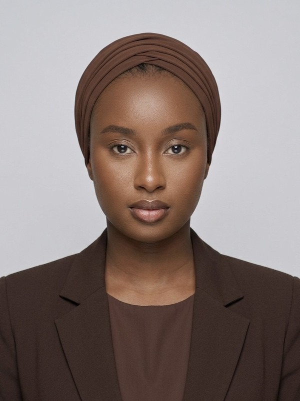

À PROPOS DE MOI
Ramatoulaye NDIAYE
Étudiante en cybersécurité à l'École Hexagone, titulaire d'un BUT Réseaux et Télécommunications (parcours Cybersécurité). J'aime comprendre comment une infrastructure fonctionne, comment on la surveille et comment on la défend.
Je recherche une alternance en réseaux, systèmes et cybersécurité
Ce que je recherche
- Contrat : alternance de 12 à 24 mois
- Rythme : 3 semaines en entreprise, 1 semaine en formation
- Domaines : administration systèmes et réseaux, sécurité des infrastructures, supervision, audit
- Disponibilité : immédiate, mobilité nationale
Ce que j'ai déjà fait
- Deux stages : audit et preuve de concept Teams chez NEXTEAM Group, supervision Centreon chez AOC Télécom
- Un SIEM Splunk et une solution Keycloak montés en projet
- Secrétaire générale d'une association (2024 à 2026)
Langues : français courant, anglais intermédiaire. En dehors des écrans : cuisine sénégalaise, culture et histoire du Sénégal, marche.
Mon projet de supervision de sécurité, de la machine au tableau de bord (cliquer pour le détail) :
Projets
Compétences
Clique sur un outil pour afficher les projets où je l'ai utilisé.
Parcours
Mastère Cybersécurité / Cyberdéfense, École Hexagone
Clermont-Ferrand, depuis septembre 2026, en alternanceTechnicienne Réseaux et Télécom, NEXTEAM Group
Stage, février à juin 2026BUT Réseaux et Télécommunications, parcours Cybersécurité
IUT Clermont Auvergne, 2022 à 2026Technicienne Réseaux, AOC Télécom
Stage, avril à juin 2024Secrétaire générale, Association Sénégalaise de Clermont-Ferrand
2024 à 2026, organisation d'événements, coordination des équipes, communication interne
Contact
Disponible immédiatement, mobilité nationale.